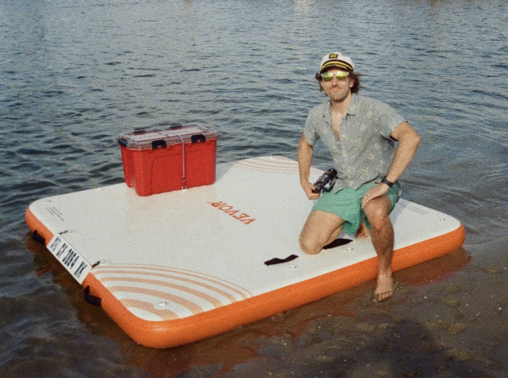
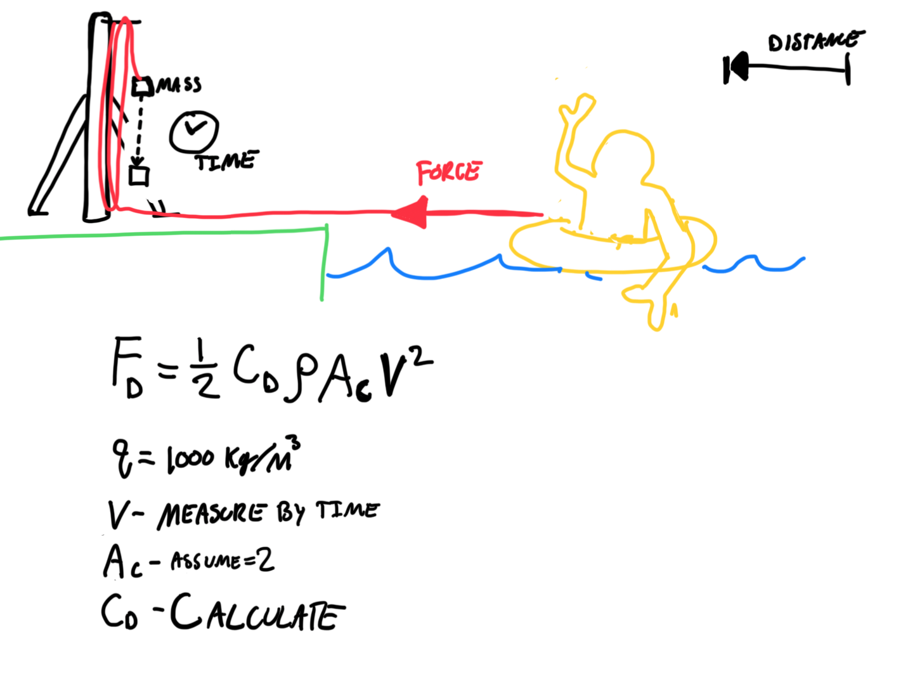
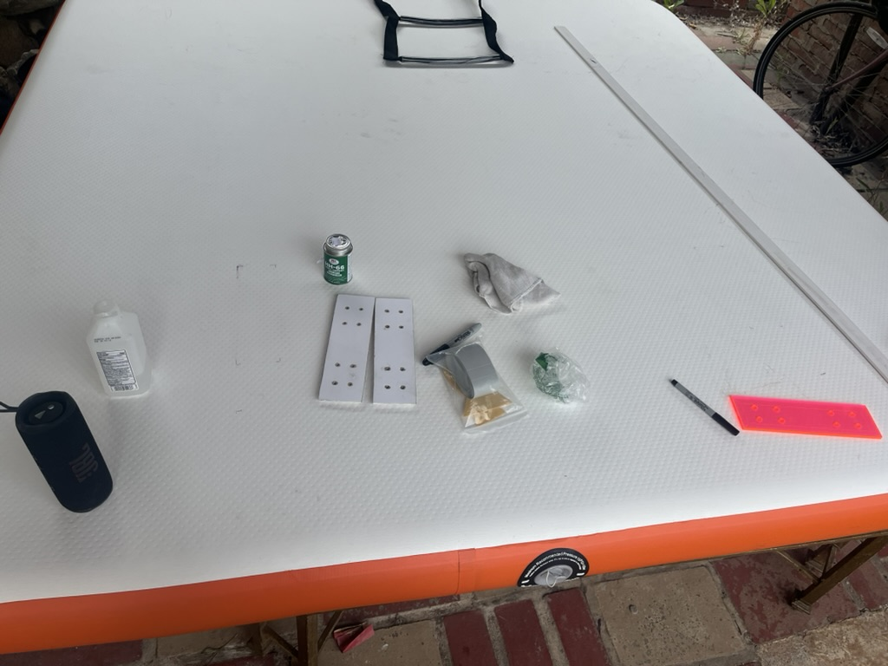
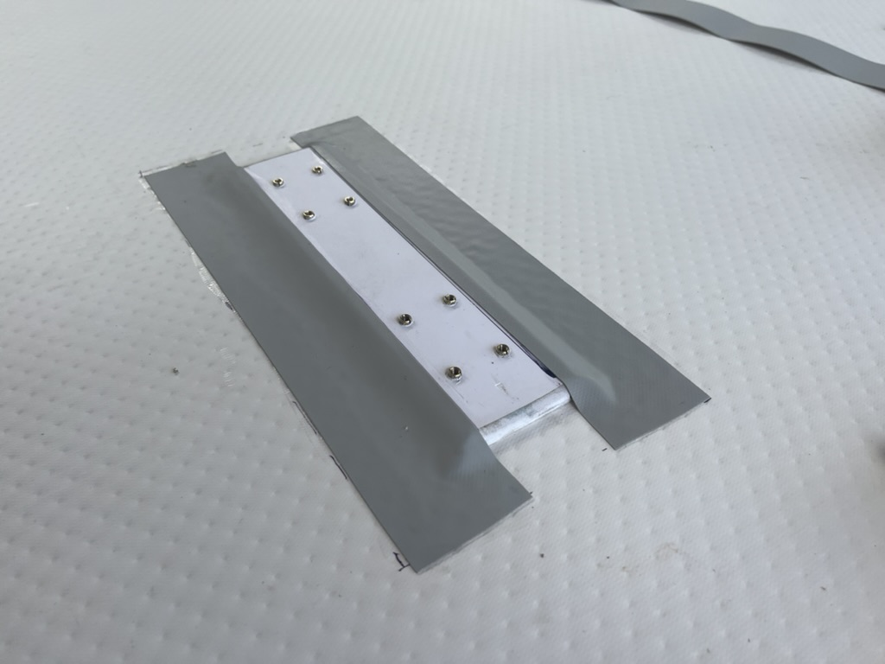
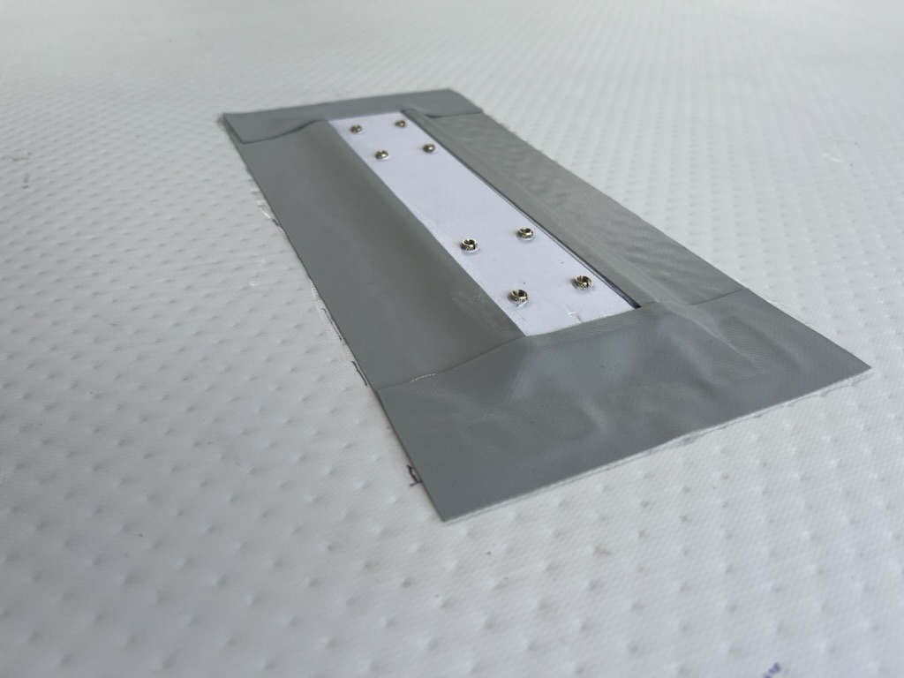
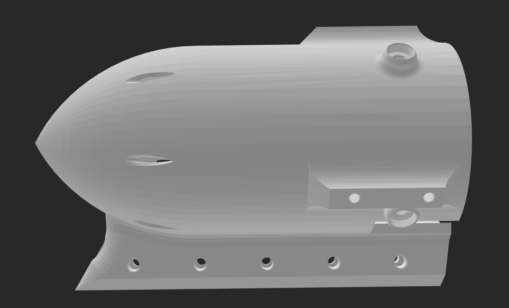
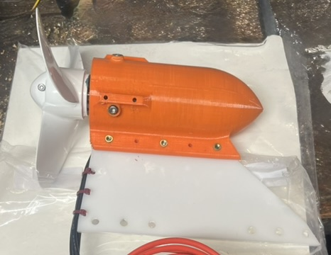
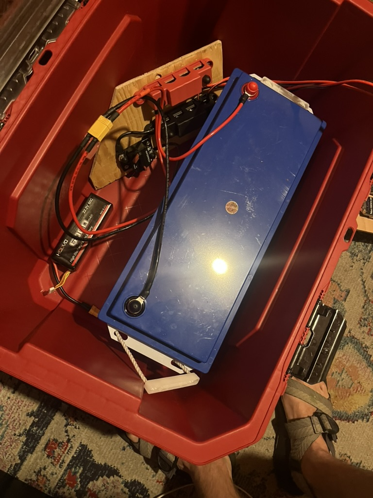
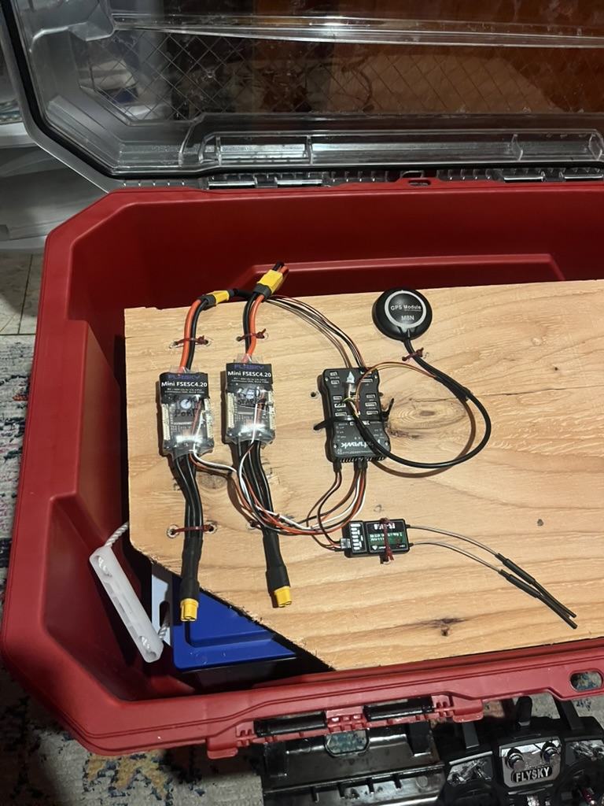

Floatilla
I grew up in the midwest, and throughout my college years, my friends and I would enjoy spending weekends going on float trips. Gently floating down the river as a group over the course of an afternoon was always a unique experience. After I moved to the west-coast I realized, gentle rivers perfect for floating were just out of reach residing mostly in northern California.
To solve this problem I decided that would create a slow moving vessel that would provide a platform to support coolers, snacks and seating, additionally this vessel would be capable of towing numerous other floaters riding inner-tubes. I found an inflatable dock on the internet and decided it would make a perfect structure for the Floatilla since it was relatively cheap and spacious.
Drag Experiment
I needed to determine the drag that the inflatable dock would have as it moved through the water, as
well as estimate the drag for a person being towed in an inner-tube.
To estimate the drag coefficients I devised a bucket and pulley system in which a bucket holding a known amount of
water would be released from a height and then the rope was routed through a pulley system with 4x reduction
before going out across the water to the subject.

Starting with the line completley taught the bucket would be released from a known height with a known mass and
then would descend a known
distance as the subject floating on the surface of the water is then pulled through the water by a constant
pulling force. By measuring the time it takes for the bucket to descend a certain distance it was then possible to
calculate the average velocity of the subject which experienced a constant force. Thus the Drag coefficient could
be determined by solving the Drag equation for C_d
This plot shows the results fo the drag experiment, where 3 different test subjects were used. Multiple idential trials were run to provide an average value for each data point, and ensure accuracy.
| Subject | Description |
|---|---|
| Human | Person in water up to their head in water |
| Tube | Person sitting on inner-tube floatation crouched position with chest above water |
| Platform | The inflatable dock with a single 165lbs Jonathan aboard |
By plotting the C_d as a function of Velocity it can be seen that the rate of change in C_d decreases as V increases. This sensitivity study was very useful, and meant that for my results to be most accurate I should use as much mass in the bucket as possible, so I could ensure the steady state velocity achieved was suffeciently high and therefore less susceptible to error when estimating the drag coefficient C_d.
Power and Energy Study
By knowing the drag coefficient of both the Floatilla platform as well as a person riding an inner-tube it was possible to estimate the power required to tow various numbers of people at different speeds. Using the drag equation to determine the drag force at a given speed for the estimated towing load (people, tubes). I was able to then determine that approximatley 2.5Kwh was a suffecient amount of energy to tow 6 people on inner-tubes at a speed of 2mph for a duration of 4 hours.Construction
The construction of the Floatilla involved addressing three main issues how would the motors attach and what would house the motors, and where would all the electronics go.Motor Mounts
The motor mounts had to address the problem of securely attaching the motorized fins to the underside of the PVC based inflatable drop stick platform.  
To achieve a solid and stable mounting point I chose to use PVC stock material; rectangular segments 1/8" thick. The material was choosen due to the high bonding strength required; PVC to PVC results in the highest strength. To glue the mounts to the platform I used HH-66 PVC cement which chemically bonds the wo mateials with a native PVC bond with the glue itslef being PVC based. To ensure the attachment plates would be durable I applied PVC fabirc alonght the perimeter of the plates ensuring that the full assemply would not be pryed from the platform.
Motor Housing
The motor housing attaches the motor to the fin. The Motor has 4 screws distributed radially along the front edge.
The motor housing features cooling veins which allow water to flow through the front of the housing along the side of the motor and out in to the propeller area. Additionally the moro mousing adapts the "soda can" shape of the motor into a streamlined profile that also connects to the top of the fin.
This shows the completed first version of the motor housing and fin. Brass inserts were used to secure the M4 fasteners across the friction joint ensuring no movement and effective load transfering to the fin with no stress concentrations.
Electronics Box
The electronics box consists of a waterproof tote that was modified to allow for the cables powering the motors to pass through. The electonics served as the enclosure for the battery, motor controller, fuse, and flight controller.
The 2.5kWh battery pack is shown sitting at the bottom of the electronics box.
The two motor controllers and the flight controller are shown mounted to the wooden shelf sitting above the battery box.